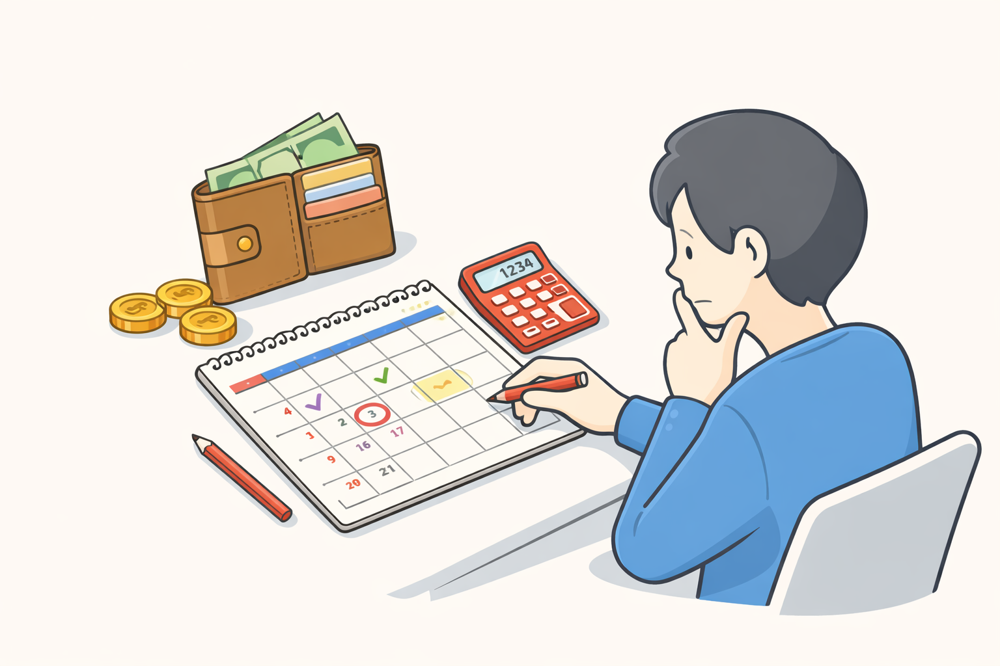
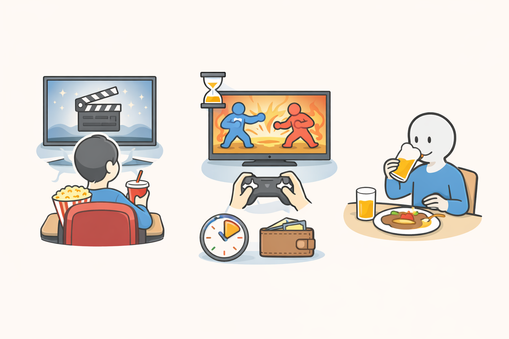

「レスポンシブルゲーミング（Responsible Gaming）」とは、ギャンブルをやめさせることを目的にするのではなく、
無理のない範囲で安全に楽しむための考え方です。
ここでいう「ゲーミング」は、カジノのような対面の賭け事だけでなく、スマートフォンやパソコンを通じたオンラインでの賭け事も含まれます。
海外のカジノ文化では、この考え方は特別なものではなく、「当たり前のルール」として扱われています。
ホール内の掲示やゲーム説明の中でも、責任ある遊び方についての案内が見られます。
日本でも、競馬場や競艇場、パチンコ店などには、注意喚起のポスターや相談窓口が設けられています。
ギャンブル等依存症と聞くと、「極端にお金を使う人」や「意志が弱い人」という印象を持つかもしれません。
しかし実際には、誰にでも起こり得る身近な問題とされています。
最初は「ちょっとした息抜き」だったものが、気づけば時間や金額が増えている。
そんな形で少しずつ距離感が崩れていくことがあります。
レスポンシブルゲーミングは、そうなる前に一度立ち止まり、自分の状態を確認するための考え方でもあります。

このサイトが伝えたいのは、「やる・やらない」の正解ではありません。
大切なのは、自分にとって今の距離感が適切かどうかです。
同じ行動でも、娯楽として成立している人もいれば、生活に影響が出てしまう人もいます。
だからこそ、「自分は今どういう状態なのか」を知ることが重要になります。

▶ ホームに戻る ▶ ③「体験談：距離感の作り方」 ▶ ①「ギャンブルって何？」